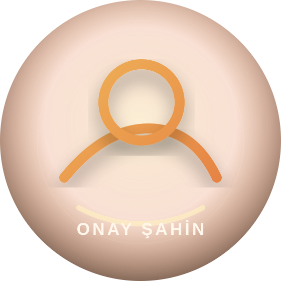

Resmi web sitesi
Onay Şahin
Karadeniz ezgilerinden ilham alan güçlü yorumlar, video klipler, sahne haberleri ve tüm resmi dijital platform bağlantıları tek adreste.

Son yayın
Horondur Nişanımız
Güncel yayınları Spotify, Apple Music, YouTube, Deezer ve Amazon Music üzerinden dinleyebilirsiniz.
Sanatçı hakkında
Karadeniz kültüründen sahneye uzanan güçlü bir hikâye.
Trabzon’da doğan Onay Şahin’in müzik yolculuğu, çocukluk yıllarında babasının hediye ettiği kemençe ile başladı. Üniversite yıllarında İstanbul’da sahneyle daha güçlü bağ kuran Şahin, Karadeniz müziğinin yöresel ruhunu kendi yorumu, besteleri ve enerjik performanslarıyla dinleyiciyle buluşturdu.
Horon kültürünü, yöresel ezgileri ve Karadeniz’in hikâye dilini güncel düzenlemelerle bir araya getiren Onay Şahin; albümleri, single çalışmaları, video klipleri ve konserleriyle müzik yolculuğunu sürdürmektedir.
Dijital platformlar
Müzikleri dinle
Tüm resmi hesaplar ve platform bağlantıları tek yerde.
Videolar
Klipler ve sahne kayıtları
Öne çıkan videoları izleyin, yeni klipler ve kısa içerikler için resmi YouTube kanalını takip edin.
Resmi YouTube kanalına gitSosyal medya
Reels ve kısa içerikler
Yeni şarkı duyuruları, klip kesitleri, sahne anları ve Karadeniz müziği odaklı kısa içerikler için resmi sosyal medya hesaplarını takip edin.
İletişim
Konser, basın ve dijital işler
Konser organizasyonu, basın talepleri, dijital yayın ve resmi iletişim için aşağıdaki kanalları kullanabilirsiniz.